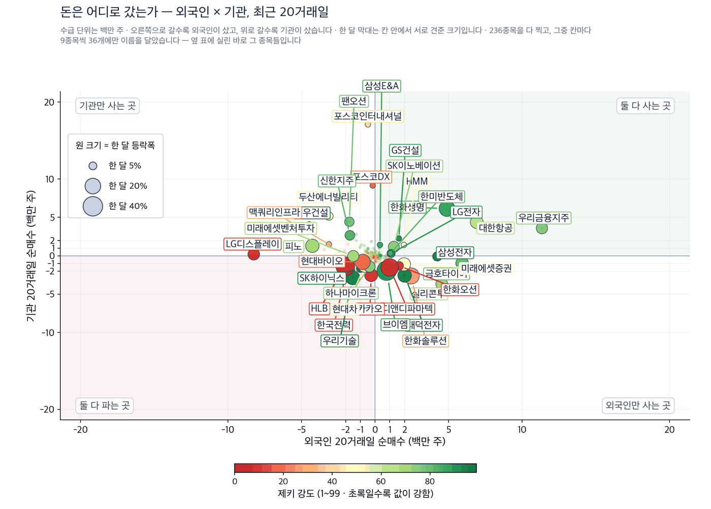
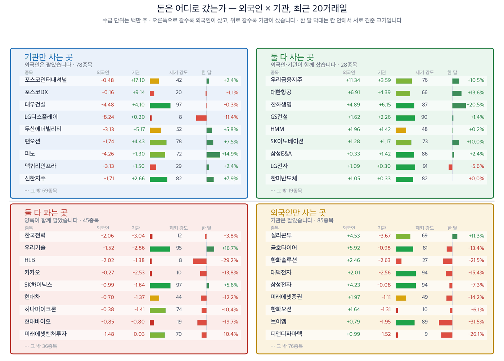

코스피가 3.26% 내린 날, 351종목 가운데 78개는 올랐습니다
코스피 6,684.37 (-3.26%) | 코스닥 806.79 (-1.69%) | 제키 신호등 빨간불 | 나스닥 26,202.20 (-0.50%) | 원/달러 1,347.5원 |

| 켜진 등 | 오늘의 국면입니다. 초록은 매수 우위, 노랑은 관망, 빨강은 매수 자제입니다. |
| 채워진 칸 | 7가지 조건 중 몇 개를 통과했는지입니다. 칸이 많이 찰수록 시장 구조가 튼튼합니다. |
| 칸이 다 찼는데 노랑·빨강이면 | 다른 이유로 한 단계 낮춘 것입니다. 그림 아래에 그 이유를 적었습니다. |
제키 신호등은 저희가 시장을 7가지 기준으로 재서 하나의 등으로 바꾼 것입니다. 초록불은 저희 기준으로 사기 좋은 국면이고, 노란불은 관망, 빨간불은 새로 사는 것을 자제하는 국면입니다. 9월 14일 코스피는 7가지 가운데 4가지만 통과해 빨간불이고, 코스닥은 2가지만 통과했습니다.
간밤 뉴욕은 내렸습니다. 나스닥은 9월 14일 0.50% 내려 26,202.20으로 마감했습니다. S&P 500도 0.45% 내렸습니다. 인공지능 개발 속도를 늦추자는 요구가 나오면서 엔비디아와 마이크론이 눌렸습니다. 서울은 뉴욕이 닫힌 뒤에 열립니다. 오늘 아침 반도체가 받는 압력은 여기서 옵니다. (Investor's Business Daily)
1. 지수는 내렸지만 시장이 통째로 내린 것은 아닙니다. 9월 14일 코스피는 3.26% 내렸습니다. 그런데 저희가 보는 351종목 가운데 78개는 올랐습니다. 다섯에 하나꼴입니다. 미국 국채 10년물 금리가 4.96%까지 오르면서 외국인이 반도체를 팔았고, 그 돈이 시장을 떠나지 않고 다른 업종으로 옮겨 갔습니다.
2. 오른 쪽에서 저희 기준을 가장 많이 통과한 것은 화장품이었습니다. 한국콜마는 저희가 보는 4가지 조건을 모두 채웠습니다. 아모레퍼시픽이 더마 화장품과 헤어케어를 새 성장축으로 삼겠다고 밝힌 날, 이 회사들의 값과 수급이 함께 움직였습니다.
3. 가장 큰 기사가 가장 좋은 종목은 아니었습니다. K방산이 미국 시장을 뚫었다는 소식이 크게 실렸고 한화에어로스페이스는 +4.81% 올랐습니다. 그러나 4가지 조건을 하나도 채우지 못했습니다. 저희는 이런 경우 종목으로 내세우지 않고, 왜 제외했는지를 아래에 적었습니다.
먼저, 이번 주 경제
이번 주는 금리를 정하는 주간입니다. 날짜는 한국경제가 9월 11일에 전한 일정을 그대로 적었습니다.
| 날짜 | 무엇이 있는가 | 우리에게 무엇이 걸렸는가 |
|---|---|---|
| 9월 15~16일 (현지시간) | 미국 9월 연방공개시장위원회 정례회의 | 금리를 더 올리면 미국 국채 10년물이 5%를 넘습니다. 9월 14일 외국인이 반도체를 판 이유가 이 금리입니다 |
| 9월 17일 새벽 (한국시간) | 연방공개시장위원회의 금리 결정 발표 | 서울이 열기 전에 결과가 나옵니다. 17일 아침 개장가에 그대로 반영됩니다 |
| 9월 14~18일 | 미국 선물·옵션 동시 만기일이 든 주간 | 만기일 전후로 지수가 실제 수급과 무관하게 흔들릴 수 있습니다 |
아래 값은 모두 9월 14일 기준입니다.
| 무엇을 보는가 | 지금 값 | 넘으면 어떻게 되는가 |
|---|---|---|
| 미국 국채 10년물 금리 | 4.96% | 5%를 넘으면 외국인이 반도체를 더 팝니다. 9월 14일 외국인은 이미 순매도였습니다 |
| 서부텍사스산 원유 | 101.71달러 | 더 오르면 항공과 화학의 원가가 오르고, 해운은 반대로 운임이 오릅니다 |
| 원/달러 환율 | 1,347.5원 | 원화가 더 약해지면 수출주에는 이롭고, 외국인의 매도는 늘어납니다 |
일본은행의 통화정책 회의도 이번 주에 함께 열립니다. 두 중앙은행이 같은 주에 금리를 정하는 것은 드문 일입니다. 금리는 지금 한국 증시를 누르는 가장 큰 힘입니다.
저희는 저희가 보는 351종목에 4가지를 묻습니다. 한 달 동안 값이 올랐는가, 제키 강도가 90을 넘는가, 외국인이 20거래일 동안 순매수했는가, 기관이 그랬는가입니다. 제키 강도는 저희가 전 종목의 값을 견주어 1부터 99까지 매긴 순위입니다. 90이면 상위 10%에 든다는 뜻입니다.
아모레퍼시픽이 앞으로 10년의 목표를 숫자로 내놓았습니다. 브랜드를 파는 회사가 성장 계획을 키우면 그 제품을 대신 만드는 회사에 먼저 물량이 갑니다. 그래서 저희는 브랜드와 제조를 함께 봤습니다.
종가 145,800원 | 당일 +3.18% | 한 달 +7.84% | 석 달 +66.06% | 제키 강도 95 | 고점 대비 -9.83% |
| 누가 | 화장품을 대신 만들어 주는 한국콜마입니다. |
| 무엇을 | 9월 14일 +3.18% 올라 145,800원에 마감했습니다. 같은 날 코스피는 내렸습니다. |
| 언제 | 아모레퍼시픽의 투자 설명회는 9월 11일에 열렸고, 9월 14일 보도됐습니다. (한국경제) |
| 어디서 | 서울 용산의 아모레퍼시픽 본사에서 국내외 기관투자자와 애널리스트를 앞에 두고 열렸습니다. |
| 왜 | 아모레퍼시픽이 더마 화장품과 헤어케어에서 2030년까지 각각 연 매출 1조원을 올리겠다고 밝혔기 때문입니다. 브랜드가 물량을 늘리면 만드는 쪽이 먼저 받습니다. |
| 어떻게 | 한국콜마는 저희 4가지 조건을 모두 채웠습니다. 제키 강도 95, 석 달 동안 +66.06%, 외국인과 기관이 20거래일 동안 함께 순매수했습니다. |
종가 144,400원 | 당일 +2.78% | 한 달 +7.36% | 석 달 +35.84% | 제키 강도 74 | 고점 대비 -12.54% |
목표를 내놓은 회사 자체입니다. 9월 14일 +2.78% 올랐고, 석 달 동안 +35.84%입니다. 외국인과 기관이 20거래일 동안 함께 순매수했습니다. 다만 제키 강도가 74라 90에 못 미칩니다. 4가지 가운데 3가지를 채웠습니다. 2027회계연도 매출 목표는 5조원가량이고, 직전 회계연도는 4조4,920억원이었습니다. 10% 늘리겠다는 뜻입니다. (한국경제)
상하이해운거래소가 집계하는 컨테이너 운임 지수가 지난주 3,662.18로 2년 만에 가장 높았습니다. 한 주 사이 72.18포인트 올랐습니다. (한국경제) 운임이 오르면 배를 가진 회사의 매출이 그대로 늘어납니다.
종가 6,050원 | 당일 +0.33% | 한 달 +7.46% | 석 달 +17.93% | 제키 강도 78 | 고점 대비 -5.17% |
| 누가 | 벌크선을 운영하는 팬오션입니다. |
| 무엇을 | 9월 14일 +0.33% 올랐습니다. 석 달 동안 +17.93%입니다. |
| 언제 | 운임 지수가 2년 만의 최고치를 기록한 것은 지난주입니다. |
| 어디서 | 상하이해운거래소가 집계해 발표합니다. |
| 왜 | 홍해와 호르무즈를 둘러싼 긴장으로 배가 먼 길로 돌아가고, 그만큼 쓸 수 있는 배가 줄어 운임이 오릅니다. 3분기는 원래 성수기이기도 합니다. |
| 어떻게 | 값은 따라왔지만 수급은 갈렸습니다. 기관은 20거래일 동안 442.7만 주 순매수했고 외국인은 174.3만 주 순매도했습니다. |
종가 21,100원 | 당일 +1.20% | 한 달 +0.24% | 석 달 +3.18% | 제키 강도 48 | 고점 대비 -13.88% |
컨테이너선을 운영합니다. 운임 지수가 바로 이 회사의 값에 닿습니다. 9월 14일 +1.20% 올랐습니다. 수급은 팬오션과 반대로 양쪽이 모두 샀습니다 — 외국인 +196.3만 주, 기관 +141.9만 주입니다. 한 달로 보면 +0.24%입니다. 다만 제키 강도가 48에 그쳐 4가지 가운데 3가지를 채웠습니다.
일론 머스크가 미국 텍사스주 오스틴에 짓는 반도체 공장 테라팹이 한국 장비를 사기 시작했습니다. 한미반도체가 인공지능 시스템반도체용 패키징 장비 구매주문을 받았습니다. 후공정 장비에서 국내 업체가 이 공장의 주문을 받은 것은 처음입니다. (한국경제)
종가 226,000원 | 당일 -2.16% | 한 달 +0.00% | 석 달 -28.37% | 제키 강도 82 | 고점 대비 -44.81% |
| 누가 | 반도체 패키징 장비를 만드는 한미반도체입니다. |
| 무엇을 | 테라팹으로부터 인공지능 시스템반도체용 패키징 장비 구매주문을 받았습니다. |
| 언제 | 9월 14일 반도체업계를 인용해 보도됐습니다. |
| 어디서 | 테라팹은 미국 텍사스주 오스틴에 짓고 있는 반도체 공장입니다. |
| 왜 | 머스크가 스페이스X와 테슬라, xAI에 쓸 인공지능 반도체를 직접 만들려 하기 때문입니다. 앞서 전공정 장비에서는 HPSP가 같은 공장의 주문을 받았습니다. |
| 어떻게 | 한미반도체는 인천 주안에 8공장을 짓고 2027년 2분기 양산을 준비하고 있습니다. 올해 말에는 미국 캘리포니아주 새너제이에 현지 법인을 세울 계획입니다. |
값은 아직 따라오지 않았습니다. 9월 14일 2.16% 내렸고 고점 대비 -44.81%입니다. 한 달 전과는 값이 똑같습니다 — 8월 13일 종가도 226,000원이었습니다. 외국인과 기관은 20거래일 동안 함께 샀습니다. 4가지 가운데 2가지입니다.
종가 7,460원 | 당일 +5.97% | 한 달 +19.74% | 석 달 +3.61% | 제키 강도 85 | 고점 대비 -32.24% |
반도체를 조립하고 검사하는 회사입니다. 한미반도체가 장비를 팔면 SFA반도체는 그 공정을 실제로 돌립니다. 9월 14일 +5.97% 올라 그날 저희가 보는 종목 가운데 상승률이 가장 높았습니다. 한 달 동안 +19.74%입니다. 기관이 20거래일 동안 279.1만 주 순매수했지만 외국인은 128.0만 주 순매도했습니다.
기사가 크다고 종목이 되지는 않습니다. 아래 2가지는 지면에서 크게 다뤄졌지만 저희 숫자가 따라오지 않아 오늘 종목으로 내세우지 않습니다.
| 제외한 테마 | 기사가 말한 것 | 저희 숫자가 말한 것 |
|---|---|---|
| K방산의 미국 진출 | 한화에어로스페이스가 K9 자주포를 미국에 수출했고, 후속 물량이 10조원에 이를 것이라는 전망이 나왔습니다. (한국경제) | 한화에어로스페이스 (012450)는 9월 14일 +4.81% 올랐지만 4가지를 하나도 채우지 못했습니다. 한 달 -4.39%, 제키 강도 61, 외국인과 기관 모두 순매도였습니다. LIG디펜스앤에어로스페이스 (079550)도 한 달 -16.49%입니다. |
| 인공지능이 키우는 보안 | 엔비디아의 젠슨 황 최고경영자가 9월 10일 샌프란시스코에서 열린 골드만삭스 기술 회의에서 사이버 보안을 인공지능의 다음 시장으로 꼽았습니다. (한국경제) | 안랩 (053800)은 9월 14일 +3.37% 올랐지만 제키 강도가 52에 그치고 외국인과 기관이 20거래일 동안 모두 순매도했습니다. 크게 오른 보안 종목은 대부분 저희가 값을 재지 않는 소형주였습니다. |
오늘 찾은 것, 한 장으로
| 종목 | 테마 | 제키 강도 | 9월 14일 | 충족 | 근거의 무게 |
|---|---|---|---|---|---|
| 한국콜마 (161890) | 화장품 | 95 | +3.18% | 4/4 | 근거 확실 |
| 아모레퍼시픽 (090430) | 화장품 | 74 | +2.78% | 3/4 | 근거 있음 |
| 팬오션 (028670) | 해운 | 78 | +0.33% | 2/4 | 확인 필요 |
| HMM (011200) | 해운 | 48 | +1.20% | 3/4 | 근거 있음 |
| 한미반도체 (042700) | 반도체 후공정 | 82 | -2.16% | 2/4 | 확인 필요 |
| SFA반도체 (036540) | 반도체 후공정 | 85 | +5.97% | 2/4 | 확인 필요 |
| 한화에어로스페이스 (012450) | 방산(제외) | 61 | +4.81% | 0/4 | 근거 없음 |
| LIG디펜스앤에어로스페이스 (079550) | 방산(제외) | 69 | +3.10% | 1/4 | 확인 필요 |
| 안랩 (053800) | 보안(제외) | 52 | +3.37% | 1/4 | 확인 필요 |
근거의 무게 — 4가지를 세었습니다
딱지는 저희가 고른 것이 아니라 O의 개수가 정합니다. 4개를 다 채우면 근거 확실, 3개면 근거 있음, 2개 이하는 확인 필요입니다. 읽는 분이 저희 셈을 직접 검산하실 수 있게 4칸을 모두 펼쳤습니다.
| 종목 | ①값이 올랐나 | ②강도 90↑ | ③외국인 순매수 | ④기관 순매수 | 충족 | 근거의 무게 |
|---|---|---|---|---|---|---|
| 한국콜마 (161890) | O | O | O | O | 4/4 | 근거 확실 |
| 아모레퍼시픽 (090430) | O | X | O | O | 3/4 | 근거 있음 |
| 팬오션 (028670) | O | X | X | O | 2/4 | 확인 필요 |
| HMM (011200) | O | X | O | O | 3/4 | 근거 있음 |
| 한미반도체 (042700) | X | X | O | O | 2/4 | 확인 필요 |
| SFA반도체 (036540) | O | X | X | O | 2/4 | 확인 필요 |
| 한화에어로스페이스 (012450) | X | X | X | X | 0/4 | 근거 없음 |
| LIG디펜스앤에어로스페이스 (079550) | X | X | O | X | 1/4 | 확인 필요 |
| 안랩 (053800) | O | X | X | X | 1/4 | 확인 필요 |
제키 강도 90은 일부러 높게 잡은 기준입니다. 그래서 오늘 4가지를 모두 채운 것은 한국콜마 하나뿐입니다.
기관과 외국인은 어디로 갔나
아래 두 그림은 저희가 보는 종목 가운데 거래가 충분한 236개를 외국인과 기관의 20거래일 순매수로 나눈 것입니다. 수급 자료의 기준일은 9월 9일입니다. 한국거래소 자료를 받아오는 길이 9월 10일부터 막혀 있어 그 뒤 3거래일은 아직 들어오지 않았습니다. 값과 등락은 9월 14일 기준이고, 수급만 9월 9일까지입니다.

| 점 하나 | 종목 하나입니다. 가로·세로 위치가 두 값을 그대로 나타내고, 가운데 가로·세로로 그어진 두 선이 기준선입니다. 네 귀퉁이의 이름표가 그 칸의 뜻입니다. |
| 점 크기 | 최근 한 달 등락폭입니다. 오르든 내리든 크게 움직였으면 큰 점입니다. |
| 점 색 | 제키 강도입니다. 초록일수록 주가가 시장에서 강합니다. |
| 30종목만 | 이름이 겹치면 못 읽기 때문입니다. 가운데 몰린 나머지는 움직임이 거의 없는 종목들이라 뺐습니다. |

| 네 칸 | 가로와 세로 두 값이 각각 기준선을 넘었는지로 넷을 가릅니다. 오른쪽 위는 둘 다 넘은 곳, 왼쪽 아래는 둘 다 못 넘은 곳, 나머지 두 칸은 한쪽만 넘은 곳입니다. 칸 이름이 그 칸에 든 종목의 상태를 한 문장으로 적어 둔 것입니다. |
| 가운데 두 칸 | 두 기간을 견주는 자리입니다. 글자 A~E가 있으면 이 업계가 쓰는 표준 등급으로, A는 강한 매수, B는 매수 우세, C는 매수와 매도가 반반, D는 매도 우세, E는 강한 매도를 뜻합니다(전체를 다섯으로 나눈 순위라 A가 상위 20%입니다). 숫자가 있으면 그 기간의 순매수 규모입니다. |
| 칸마다 9종목 | 그 칸에서 움직임이 가장 큰 순서입니다. 나머지는 칸 아래에 몇 종목인지만 적었습니다. 옆 산점도가 이름을 다는 종목이 바로 이 9종목씩입니다. |
| 한 달 막대 | 0을 가운데 두고 오른쪽이 상승, 왼쪽이 하락입니다. 길이는 같은 칸 안에서만 서로 견주십시오 — 칸마다 기준이 다릅니다. |
| 제키 강도 | 1~99 순위입니다. 막대가 길수록, 초록에 가까울수록 그 종목의 주가가 시장에서 강합니다. |
찾아낸 종목에 자금이 따라왔는가
기사가 맞고 값이 올랐어도 돈이 따라왔는지는 따로 봐야 합니다. 아래는 위에서 다룬 종목만 모은 것이며, 모두 9월 9일까지의 20거래일 순매수입니다.
| 종목 | 외국인 20거래일 | 기관 20거래일 | 어느 쪽이 샀나 | 기준일 |
|---|---|---|---|---|
| 한국콜마 (161890) | +27.8만 주 | +11.9만 주 | 양쪽 모두 순매수 | 2026-09-09 |
| 아모레퍼시픽 (090430) | +27.7만 주 | +48.8만 주 | 양쪽 모두 순매수 | 2026-09-09 |
| 팬오션 (028670) | -174.3만 주 | +442.7만 주 | 기관만 순매수 | 2026-09-09 |
| HMM (011200) | +196.3만 주 | +141.9만 주 | 양쪽 모두 순매수 | 2026-09-09 |
| 한미반도체 (042700) | +104.6만 주 | +33.3만 주 | 양쪽 모두 순매수 | 2026-09-09 |
| SFA반도체 (036540) | -128.0만 주 | +279.1만 주 | 기관만 순매수 | 2026-09-09 |
| 한화에어로스페이스 (012450) | -8.1만 주 | -25주 | 양쪽 모두 순매도 | 2026-09-09 |
| LIG디펜스앤에어로스페이스 (079550) | +11.6만 주 | -20.6만 주 | 외국인만 순매수 | 2026-09-09 |
| 안랩 (053800) | -3.4만 주 | -2.5만 주 | 양쪽 모두 순매도 | 2026-09-09 |
이 표는 지금 어느 쪽이 사고 있는지를 보여 줄 뿐이고, 앞으로 오를지를 맞히지는 못합니다. 저희가 두 시장 20년 자료로 네 번 검정했고 네 번 모두 다음 한 달을 예고하지 못했습니다. 그래서 마지막 확인용으로만 씁니다.
업종 순위
저희가 업종마다 소속 종목의 제키 강도를 평균한 값입니다. 9월 14일 기준 상위 6개입니다.
| 순위 | 업종 | 업종 강도 | 대표 종목 |
|---|---|---|---|
| 1 | 석유와가스 | 98 | GS(078930) 94 · SK(034730) 92 · S-Oil(010950) 91 |
| 2 | 생명보험 | 97 | 미래에셋생명(085620) 88 · 한화생명(088350) 87 · 삼성생명(032830) 81 |
| 3 | 건설 | 95 | 자이에스앤디(317400) 98 · 대우건설(047040) 97 · GS건설(006360) 90 |
| 4 | 반도체와반도체장비 | 87 | 티에스이(131290) 98 · SK하이닉스(000660) 97 · SK스퀘어(402340) 97 |
| 5 | 은행 | 79 | 신한지주(055550) 82 · 하나금융지주(086790) 81 · KB금융(105560) 80 |
| 6 | 전기장비 | 76 | 가온전선(000500) 98 · LS ELECTRIC(010120) 93 · 지엔씨에너지(119850) 93 |
장중 체크리스트
9월 15일 장중에 3가지만 보시면 됩니다.
| 언제 | 무엇을 | 왜 |
|---|---|---|
| 개장 30분 | 외국인 순매수가 매수로 돌아서는지 | 9월 14일 외국인은 반도체를 팔았습니다. 그 흐름이 이어지는지가 첫 신호입니다 |
| 장중 | 원/달러가 1,347.5원 위로 더 오르는지 | 환율이 더 오르면 외국인의 매도가 늘어납니다 |
| 마감 30분 | 오른 종목 수가 78개보다 많은지 | 지수보다 이 숫자가 시장의 넓이를 더 잘 보여 줍니다 |
이번 주에 확인할 것
가장 큰 일정은 9월 15~16일(현지시간)의 미국 연방공개시장위원회입니다. 결과는 한국시간 17일 새벽, 서울이 열기 전에 나옵니다. 미국 국채 10년물이 5%를 넘는지가 한국 증시로 오는 가장 직접적인 연결 고리입니다.
이 다이제스트를 읽는 법
| 말 | 뜻 |
|---|---|
| 제키 강도 | 저희가 전 종목의 값 흐름을 견주어 1부터 99까지 매긴 순위입니다. 90이면 상위 10%에 듭니다 |
| 제키 자금 | 오르는 날에 거래가 몰렸는지를 A부터 E까지로 매긴 것입니다 |
| 제키 신호등 | 시장을 7가지 기준으로 재서 초록·노랑·빨강 하나로 바꾼 것입니다 |
| 20거래일 순매수 | 한국거래소가 공시한 외국인·기관의 매수에서 매도를 뺀 값입니다. 저희가 계산한 값이 아닙니다 |